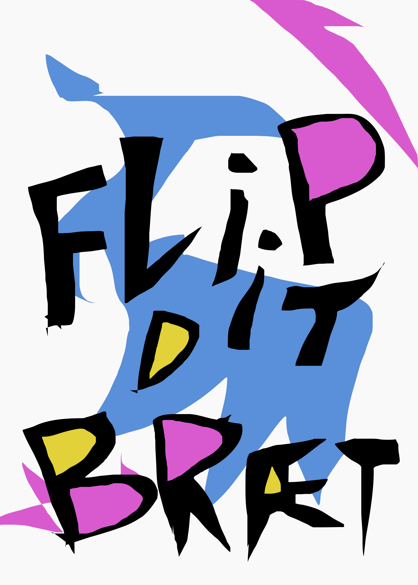
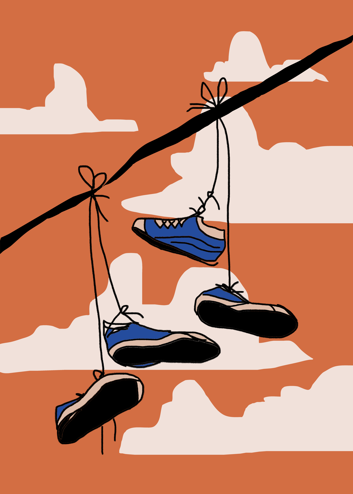
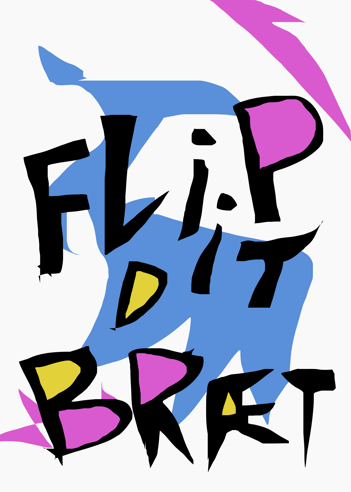
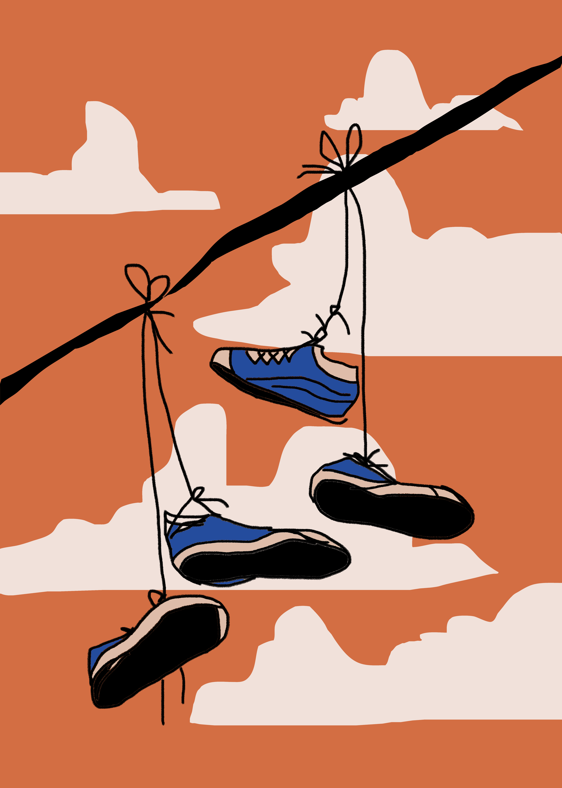

Skateboarding fællesskab i Aarhus
Skateducate er en frivillig forening, der primært arbejder for at få flere kvinder, piger og non-binære til at blive en del af skateboardmiljøet. Vi har base i Aarhus i vores kære klubhus, Conny, som står på Institut for (X). Vi startede i 2014 og gennem årene har vi gradvist vokset os til et større crew af frivillige og blevet et velkendt syn i skateboardingmiljøet på tværs af landet. Vi brænder for skateboarding, fællesskabet og kulturen, der skaber drivkraften for vores initiativer til alverdens begivenheder og events. Det kan du finde ved at følge os på vores sociale medier, Facebook og Instagram – men du finder også fotos og videoer her på siden.
Vi brænder for disse initiativer, da vi rigtigt gerne vil videregive den glæde vi har fået i skatemiljøet. Vi gør det bl.a. gennem vores ugentlige tirsdags skatesessions, vores årlige skatecamp, diverse projekter og hvad end der blomster frem fra crew næste gang. Vores tilbud er rettet mod alle aldre, men vi er især populære for de 18-35 årige. Og ja du kan også sagtens være med! Det er for alle uanset niveau, begynder såvel som rutineret. Kom, join os!

Events! :D
 


